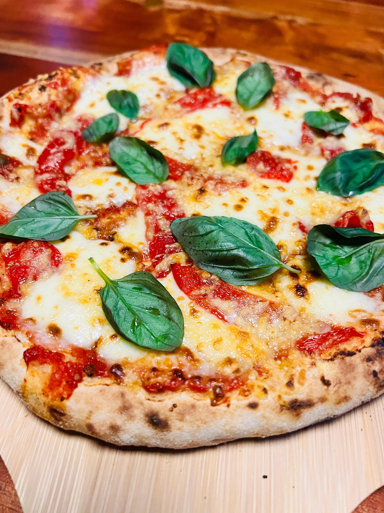

Home
Neapolitan Pizza Recipe

Description
This is an all timer, pizza as pizza was intended. A beautifully simple but tasty Neapolitan pizza
that has a classic base and the perfect mix of tangy yet savoury flavours from the marinara
sauce and mozzarella. Tons of fresh basil to boot, to cut through for freshness and aromatic herb flavours with
a sprinkle of pepper at the end for the perfect bite.
Time
45 mins + Overnight Proof
Ingredients
Makes 6 x 10 inch pizzas
For the Base
- 1kg Tipo 00 flour, plus extra for dusting
- 1 x 7g sachet of dried yeast
- Olive oil
- 700ml lukewarm water (room temperature)
- 20g sea salt
For the Toppings
- 450g Marinara Sauce
- Salt
- Pepper - freshly ground black pepper
- 375g fresh Mozzarella balls
- 45g Parmesan cheese
- Olive Oil
- Handful of fresh Basil
Steps
Tips
- This recipe uses an overnight proving time for the dough
- Make your dough the night before so it's ready to use the next evening
For the Base
- Mix the 700ml of lukewarm water with 20g of sea salt. Gradually mix in a small handful of the flour to break the water
and start to turn it into a batter. Mix in the yeast and leave for 2 minutes.
Gradually mix in 90% of the remaining flour until you have a pliable, soft dough.
- Tip the remaining flour on to a clean surface and knead the dough for 20 minutes, or until smooth and elastic (or 10 minutes
in a free-standing mixer with a dough hook). Place in a floured bowl, cover with a clean damp tea towel and prove for 1 hour,
or until roughly doubled in size.
- Knock out the air with your fists, roll into a sausage shape, chop into 6 equal pieces and roll each one into a ball, stretching
the edges underneath. Place on an oiled tray, drizzle with oil, cover with clingfilm and the tea towel and prove overnight in the
fridge (for better flavour and a more relaxed dough).
For the Pizza
- Preheat the oven to full whack (240ºC/475ºF/gas 9) and place a pizza stone inside. Use a fish slice to move one ball of dough on
to a flour-dusted surface.
- Press the ball out into a fat round disc, then pick it up and gently turn and stretch it to 30cm in diameter, using gravity to
help you. Stretch it over the back of your fists, then place on a floured pizza paddle or board – the dough should be a little
thicker around the edges. Pull it into shape and give it a jiggle so you know it’s free-moving.
- Ladle marina sauce onto the pizza base and spread until evenly covered then sprinkle a pinch of salt onto the sauce, take care not to
oversauce or undersauce. Break up your mozzarella balls into smaller chunks and spread them about onto the pizza, they will flatten as
they heat so don’t worry. Grate some parmesan onto the pizza to taste, add more if you like the nuttiness of parmesan.
Grab a couple leaves of fresh basil and place them wherever you like on the pizza.
- Quickly shunt on to your pizza stone and close the oven door to retain heat. Wait 7 or 8 minutes and it’ll be golden, crisp and ready to eat.
- Grind some fresh pepper to taste to give you pizza a spruce and enjoy!